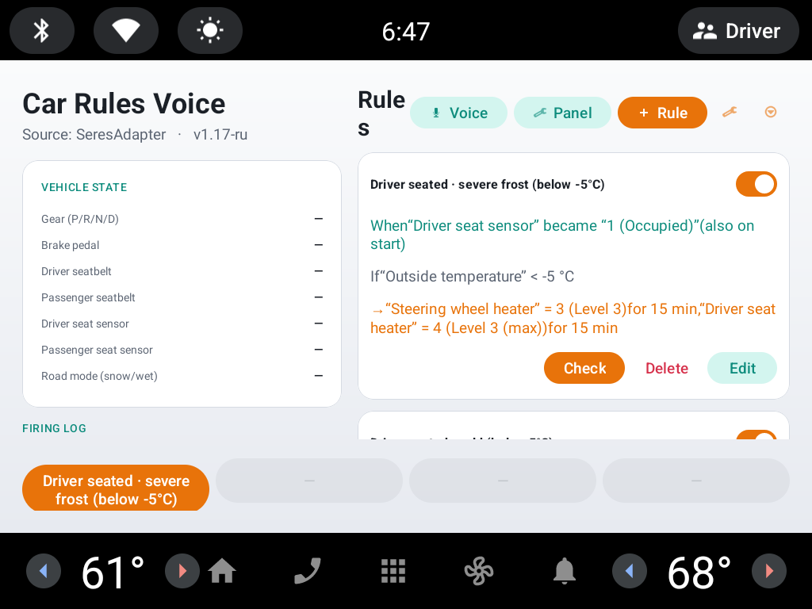
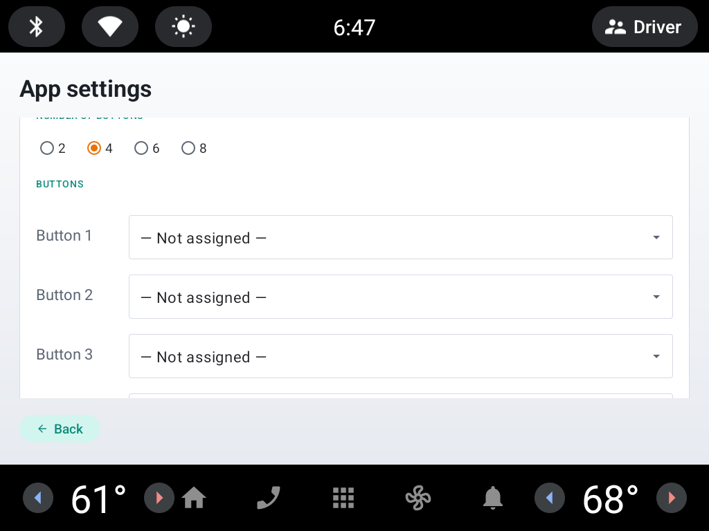

Пошаговое создание правила на двух примерах, привязка правила к
голосовой команде, FAQ. · Step-by-step rule creation with two worked examples, attaching a
rule to a voice command, an FAQ. · ساخت گامبهگام قانون با دو مثال، اتصال قانون به فرمان
صوتی، سؤالات متداول.
Скачать / Download / دانلود — Car Rules Voice v1.27
Выберите APK того языка, на котором будете произносить голосовые команды. · Choose the APK matching the language you will speak voice commands in. · APK را متناسب با زبانی که فرمان صوتی میگویید انتخاب کنید. · Android 10+ (Seres M5).
Car Rules v0.70 — версия без голоса (лёгкая, только правила) / no-voice edition (lightweight, rules only) / نسخهٔ بدون صدا (سبک، فقط قوانین):
📦 CarRules-0.70-release.apk
Оба приложения подписаны одним ключом — правила из Car Rules можно перенести в Voice при первом запуске или через меню «⋮». · Both apps share one signing key — rules from Car Rules can be imported into Voice on first launch or via the “⋮” menu. · هر دو برنامه با یک کلید امضا شدهاند — قوانین Car Rules هنگام اولین اجرا یا از منوی «⋮» به Voice منتقل میشود.
Car Rules ADB Grant — отдельное маленькое приложение для телефона: выдаёт магнитоле разрешение «Отображение поверх других окон» (для плавающей панели) и настраивает Huawei AppMarket, по Wi-Fi adb, без компьютера (инструкция — в разделе своего языка ниже) / a small standalone phone app that grants the head unit's "Display over other apps" permission (for the floating panel) and configures the Huawei AppMarket store, over Wi-Fi adb, no computer needed (instructions in the language section below) / برنامهای کوچک و جداگانه برای گوشی: مجوز «نمایش روی سایر برنامهها» (برای پنل شناور) را اعطا و فروشگاه Huawei AppMarket را پیکربندی میکند، از طریق adb بیسیم و بدون کامپیوتر (دستورالعمل در بخش زبان خودتان در پایین صفحه):
📱 CarRulesAdbGrant-1.8-debug.apk
Устанавливается на обычный телефон (Android), не на магнитолу — не требует Android Automotive. · Installs on an ordinary phone (Android), not the head unit — no Android Automotive required. · روی یک گوشی معمولی اندروید نصب میشود، نه هدیونیت — نیازی به Android Automotive نیست.
Видео-демонстрация / Video demo / ویدئوی نمایشی
Скриншоты / Screenshots / تصاویر

Главный экран + панель быстрого запуска · Main screen + quick-launch bar · صفحهٔ اصلی + نوار دسترسی سریع

Настройки программы · App settings · تنظیمات برنامه
Авто Правила Голос — инструкция
Приложение для головного устройства Seres M5: автоматические
правила для автомобиля плюс офлайн-голосовое управление.
Что это
Правила строятся по принципу:
КОГДА что-то произошло → И ЕСЛИ выполняются условия → ТО выполнить действия.
Пример: «Когда водитель сел на сиденье, и если за бортом ниже −5 °C, то включить
подогрев руля и сиденья на 15 минут». Приложение работает в фоне и запускается само
после включения головного устройства.
Голосовое управление (новое)
Приложение распознаёт речь полностью офлайн (движок Vosk) — интернет не нужен.
Любому правилу можно назначить фразы, и когда приложение их услышит — правило выполнится.
На главном экране откройте «Голосовые команды».
Функция платная и активируется под конкретный VIN. Цена: 1000 ₽.
На экране активации показан VIN вашей машины — пришлите его разработчику на
tsrman@gmail.com, получите 16-значный код и введите его.
Выберите кнопку активации на руле: двойное нажатие скролла вверх/вниз
(PAGE UP/PAGE DOWN) или одиночное нажатие кастомной кнопки руля.
Кнопкой «Проверить распознавание» убедитесь, что микрофон работает.
Задайте фразы: «+ Голосовая команда» → выберите правило → введите одну или
несколько фраз-синонимов.
Язык распознавания задаётся установленным APK (русский / английский / фарси). Ставьте
APK того языка, на котором будете говорить.
Плавающая панель (новое)
Окно поверх всех приложений с крупными кнопками — по одному нажатию запускает выбранное правило
без переключения на само приложение. Та же платная лицензия, что и у голосового управления — один
и тот же код активирует обе функции.
На главном экране откройте «Панель».
Сначала нужно разрешение «Отображение поверх других окон» — см. ниже, как его получить.
После получения разрешения появится тот же экран активации (VIN + 16-значный код), что и для голоса.
Выберите количество кнопок (4, 6 или 8) и форму панели
(вертикальная или горизонтальная), назначьте правило на каждую кнопку.
Панель можно перетащить за верхнюю полоску в удобное место — позиция запоминается.
Как получить разрешение «Отображение поверх других окон»
На этой магнитоле системная кнопка «Открыть системные настройки» может не сработать (нужный
экран недоступен), а само приложение больше не пытается выдать себе это разрешение — самоподключение
к своему же adb на этой магнитоле стабильно не работает (см. историю изменений ниже). Разрешение
выдаётся с обычного телефона, без компьютера, отдельным маленьким приложением
Car Rules ADB Grant (ссылка — в разделе загрузки в начале страницы):
На магнитоле должен уже быть включён adb по TCP (обычно так и есть — порт 5555, без паринга).
Установите Car Rules ADB Grant на телефон и откройте его.
Введите IP-адрес магнитолы (порт вводить не нужно — всегда 5555) и нажмите «Выдать права».
При первом подключении на экране магнитолы может появиться запрос «Разрешить отладку?» —
подтвердите его и нажмите кнопку в приложении на телефоне ещё раз.
Раздел «Журнал ADB» в приложении показывает каждый шаг подключения (подключение, отправка
команды, чтение ответа) — полезно, если что-то не сработает.
Действию «Яркость экрана» в правилах (см. таблицу действий ниже) это разрешение не
нужно — начиная с v1.02 оно пишет яркость напрямую через системный сервис управления
подсветкой, без каких-либо специальных разрешений.
Тот же результат можно получить вручную с компьютера, если у вас есть adb: adb connect <IP магнитолы>:5555 adb shell appops set --user 0 org.tsrman.carrules.voice SYSTEM_ALERT_WINDOW allow
Действию «Авто-яркость экрана» нужно ещё одно разрешение — «Изменение системных настроек»: adb shell appops set --user 0 org.tsrman.carrules.voice WRITE_SETTINGS allow
Первый запуск
Установите APK и откройте приложение.
Разрешите доступ к геолокации (нужен для геозон; можно отказать). Для правил с
геозоной выберите «Разрешить в любом режиме», иначе геозоны не сработают в фоне.
Короткая мелодия при старте означает, что приложение подключилось к автомобилю.
Есть готовые правила (подогрев в холод, вентиляция в жару, разблокировка при «Парковке») —
их можно менять, отключать или удалять.
Главный экран
Правила — список; у каждого переключатель вкл/выкл и кнопки «Проверить»,
«Изменить», «Удалить».
Состояние автомобиля — живые значения параметров.
Журнал срабатываний — что и когда сработало, включая ошибки и нажатия кнопок руля.
Как создать правило
Нажмите «Правило», введите название.
«Когда (триггер)»: параметр/событие, переход («Стало равно», «Изменилось»,
«Возросло», «Уменьшилось») и значение. Под полем видно живое значение параметра.
Кнопка «Триггер» добавляет ещё один (сработает по любому — ИЛИ).
«И если» (условия): по умолчанию нужны все (И), переключателем — любое (ИЛИ).
«То выполнить» (действия): что включить и на какое значение. «Минут» — автовыключение
(переживает перезагрузку); «Задержка» — выполнить через N секунд; «тест» — выполнить сразу.
«Сохранить».
Полезные опции
«Срабатывать при старте»
Для перехода «Стало равно»: правило дополнительно сработает при запуске, если значение
уже нужное. Не срабатывает дважды за поездку (перевзвод — при снятии питания или через 4 часа).
Геозоны
«Также требовать нахождение в зоне»: задайте радиус, доедьте до места и сохраните координаты.
Пустой триггер → срабатывание при въезде; заданный триггер → геозона как доп. условие.
Для работы в фоне нужен фоновый доступ к геолокации.
Что нового в этой версии
Яркость экрана — действие, число 0–100%. С v1.02 пишет яркость через тот же
системный сервис подсветки, которым пользуется штатное меню настроек — раньше писало
обычную Android-яркость, которая на этой магнитоле ни на что не влияет. Никакого специального
разрешения больше не требуется.
Подогрев форсунок омывателя — новое действие «включить/выключить».
Массаж передних сидений — действие «Режим»: «Волны / Кошка / Растяжка / Змея /
Бабочка» (подтверждено на автомобиле). Интенсивность — «Выкл / уровень 1 / уровень 2 / уровень 3
(макс)».
Исправлена плавающая панель: она игнорировала выбранную в приложении светлую тему (см.
«Настройки → Тема») и всегда рисовалась в тёмной, даже когда весь остальной интерфейс был
светлым.
Плавающая панель быстрого запуска — окно поверх всех приложений с 4/6/8 крупными
кнопками (вертикально или горизонтально), каждая запускает своё правило. Та же лицензия, что и у
голоса.
Car Rules ADB Grant — отдельное приложение для телефона, выдающее это
разрешение по Wi-Fi adb без компьютера (см. «Как получить разрешение…» выше).
Исправлен экспорт правил, ронявший файл с ключами "a"/"b" вместо
"rules"/"voiceCommands" на релизных сборках.
Параметры (триггеры и условия)
Параметр
Значения
Запуск устройства / приложения (событие)
1 = Событие
Экран включился (событие)
1 = Событие
Разблокировка экрана (событие)
1 = Событие
Доступ к интернету (событие)
0 = Выкл, 1 = Вкл
Температура за бортом
число, °C
Скорость
число, км/ч
Заряд батареи
число, %
Уровень топлива
число, %
Питание автомобиля
0 = Выкл, 1 = ON / готов к движению
Передача (P/R/N/D)
0 = P, 1 = R, 2 = N, 3 = D
Статус зарядки (AC / DC быстрая)
0 = Не заряжается, 1 = Термоподготовка, 2 = Заряжается, 3 = Завершена, 4 = На паузе, 5 = Остановлена
Подключение зарядного кабеля
число (код зависит от типа разъёма — смотрите живое значение)
Про кнопки руля. Одиночное и двойное нажатие скролла разведены: одиночный
триггер срабатывает с задержкой 0,4 с (ждёт второе нажатие). Так «1 клик = одно действие,
2 клика = другое» настраивается двумя правилами. Изменения всех кнопок руля пишутся в журнал.
Важно знать
Правило срабатывает один раз на событие; первое значение после запуска — базовая линия.
Коды перечислений подобраны по реальным дампам и могут отличаться в другой комплектации —
проверяйте кнопкой «тест» и живым значением.
История изменений
Car Rules Voice v1.27 — новая настройка «Вернуть управление в»: если включён режим «Поднимать приложение на экран при активации», можно выбрать приложение, на которое экран переключится обратно после завершения голосовой команды, вместо того чтобы оставаться на этом приложении.
Car Rules Voice v1.26 — новое действие «Окна: установить положение»: одним действием можно закрыть все окна (0%), открыть все (100%) или открыть на заданный процент. Также убран вывод PM2.5 и датчика дождя (были нужны только для отладки).
Car Rules Voice v1.25 — на главном экране у кнопок «Настройки» и «Импорт / экспорт» теперь есть текстовые подписи (раньше были только иконки).
Car Rules Voice v1.24 — добавлена настройка «Включение экрана»: можно отключить автоматический вывод приложения на экран при включении зажигания/пробуждении экрана (раньше это происходило всегда).
Car Rules Voice v1.23 — новое действие «Циркуляция воздуха: переключить» — одно правило вместо двух: читает текущее состояние (внутри/снаружи) и переключает на противоположное.
Car Rules Voice v1.22 — датчик дождя (ID_RAIN_LEVEL) не привязан к конкретному CAN-фрейму, поэтому его изменения теперь пишутся в журнал вместо постоянной строки статуса. PM2.5 в салоне (ID_HVAC_PM25, с реальным CAN-фреймом) добавлен в карточку статуса на главном экране.
Car Rules Voice v1.21 — на редизайненном (v1.19) экране редактора поле
«Параметр / событие» было слишком узким и обрезало длинные названия параметров — как в
самом поле, так и в выпадающем списке. Теперь оно занимает всю ширину строки.
Car Rules Voice v1.20 — исправлена нечитаемая подпись у чекбоксов/радиокнопок
на редизайненном (v1.19) экране редактора правила: она рисовалась почти чёрным по чёрному
на новом тёмном фоне. Только это исправление, больше ничего не изменилось.
Car Rules Voice v1.19 — редизайн экрана редактора правила: тёмная тема с
зелёным акцентом (только этот экран, остальные без изменений), двухколоночная раскладка
(«Когда» слева, «Тогда» + «Настройки» справа), капсульный переключатель И/ИЛИ вместо
тумблера, номера у каждой строки триггера/условия/действия. Чисто визуальные изменения, без
новой функциональности. Также на сайт добавлена
подробная инструкция со скриншотами.
Car Rules v0.70 — портированы из Car Rules Voice: действие «Управление
штатным медиаплеером» (play/pause/next/previous для Bluetooth/USB-аудио), яркость экрана и
авто-яркость, переключение приложения между приборной панелью и центральным экраном, лючок
бензобака и детский замок задних дверей как действия; статус зарядки (AC/DC), подключение
зарядного кабеля и уровень топлива как условия; режим движения / режим дорожного покрытия и
вентиляция сидений теперь доступны и как условия (раньше — только как действия); статус
автоблокировки/авторазблокировки как условие.
Car Rules Voice v1.18 — новое действие «Управление штатным медиаплеером»:
play/pause/next/previous для Bluetooth- и USB-аудио через тот же вещательный механизм,
которым сама прошивка переключает источник с руля. В настройках голоса появилась опция
«Ставить медиа на паузу во время прослушивания»: глушит Яндекс Музыку и штатный плеер перед
открытием микрофона и включает обратно сразу после — независимо от того, распознана ли
команда.
Car Rules Voice v1.17 — новый экран «Настройки»: можно отключить звуковой
сигнал при запуске программы и включить панель быстрого запуска на главном экране (до 8
кнопок в один ряд на всю ширину, каждая запускает выбранное правило) — доступна бесплатно,
без привязки к платной лицензии плавающей панели.
Car Rules Voice v1.16 — вентиляция сидений (водитель/пассажир) теперь
доступна как условие/триггер в правилах, а не только как действие.
Car Rules Voice v1.15 — «Открыть багажник» и «Закрыть багажник» теперь
срабатывают только когда машина в парковке (передача P); добавлены статусы AC/DC-зарядки,
подключения зарядного кабеля и уровня топлива, а также открытие лючка бака — в условия и
действия правил.
Car Rules Voice v1.14 — в настройках плавающей панели добавлен вариант
с 2 кнопками (кроме 4/6/8) и отдельный переключатель «Уменьшить панель в 2 раза»: размер
кнопок и текста на панели можно вдвое уменьшить независимо от количества кнопок и формы.
Car Rules Voice v1.13 — экран «Плавающая панель» переработан: настройки
панели (включение, количество кнопок, форма) перенесены в левую колонку — раньше после
активации лицензии там оставалось пустое место, потому что карточка активации к этому моменту
уже скрывалась. Правая колонка теперь целиком отдана списку слотов: крупнее текст, шире
отступы между строками.
Car Rules Voice v1.12 — исправлена плавающая панель: после увеличения
шрифтов в v1.11 кнопки панели тоже незаметно подросли сверх заданного размера (из-за общей
темы приложения) — размер текста кнопок панели теперь зафиксирован отдельно и не зависит
от этой настройки. Также переделаны экраны «Голосовые команды» и «Настройки плавающей
панели»: список фраз и список слотов панели теперь показаны сеткой по 2 в ряд вместо
растянутых на весь экран строк с большим пустым промежутком до кнопок «Изменить»/«Удалить».
Car Rules ADB Grant v1.8 — команда appops set на этой магнитоле
не даёт вообще никакого ответа, даже при успехе (в отличие от appops get); журнал
раньше 15 секунд ждал ответ и затем показывал это как ошибку чтения, хотя разрешение уже было
выдано. Теперь для таких команд короткое ожидание, а пустой ответ — это норма, а не сбой.
v1.11 — увеличены шрифты и отступы на экранах приложения (список правил,
редактор правила, настройки плавающей панели и т. д.) — на приборной панели автомобиля текст
был мелким и оставалось много пустого места; плавающей панели это не касалось, она уже была
настроена правильно.
v1.10 — новое действие «Перекинуть приложение: приборка / центральный
экран» — одним триггером переключает выбранное приложение (по умолчанию Яндекс.Навигатор,
можно выбрать любое) между приборной панелью и центральным экраном; работает и когда открыта
только плавающая панель, а самого приложения не видно на экране. Добавлено управление
детским замком задних дверей (левая/правая). «Режим вождения» и «Дорожный режим» теперь можно
использовать не только как действие, но и как условие/триггер правила.
v1.05 — кнопка на плавающей панели теперь запускает правило сразу,
без проверки его условий и гео-зоны (раньше кнопка проверяла их так же, как обычный
автоматический триггер, и при несовпадении молча ничего не делала). Также добавлены
«Статус автоблокировки» и «Статус авторазблокировки» — состояние переключателей
«Автоблокировка при удалении» / «Авторазблокировка при приближении» теперь можно
использовать как условие или триггер правила.
v1.04 — новое действие «Авто-яркость экрана» (вкл/выкл) — тот же
переключатель «Авто», что на экране настроек яркости в SeresSettings. В отличие от
действия «Яркость экрана» (уровень, через сервис подсветки), для этого действия снова
нужно разрешение «Изменение системных настроек» — выдаётся Car Rules ADB Grant v1.7+.
v1.03 — настройки плавающей панели (включена ли, число кнопок, раскладка,
какое правило на какой кнопке, позиция на экране) теперь тоже входят в экспорт/импорт —
раньше при переносе на другое устройство или переустановке панель приходилось
настраивать заново.
v1.02 — исправлена «Яркость экрана»: раньше действие писало обычную
Android-яркость (Settings.System.SCREEN_BRIGHTNESS), которая на этой магнитоле
ни на что не влияет — центральный экран управляется отдельным системным сервисом подсветки.
Действие переведено на него; разрешение «Изменение системных настроек» ему больше не
нужно.
Car Rules v0.69 — исправлена кнопка «Тест» для действия «Голосовой
ассистент»: раньше она ничего не делала (уходила по неверному пути вместо вызова
ассистента).
Car Rules ADB Grant v1.7 — снова выдаёт разрешение «Изменение системных
настроек» (наряду с «Отображение поверх других окон») — нужно новому действию
«Авто-яркость экрана» в Car Rules Voice v1.04.
Car Rules ADB Grant v1.6 — исправлено «Проверить права»: кнопка не получала
ответ на appops get, упираясь в таймаут чтения. Причина — adbd магнитолы не
закрывает поток одноразовой shell-команды, а старое чтение ждало именно закрытия потока.
Теперь ответ читается по частям и считается полученным после короткой паузы после первого
байта, а не после закрытия потока.
Car Rules ADB Grant v1.5 — из формы убрано поле «Порт»: adb-порт магнитолы
всегда 5555, вводить его вручную больше не нужно.
Car Rules ADB Grant v1.4 — кнопка «Выдать права» больше не выдаёт
«Изменение системных настроек» (не нужно с v1.02, см. выше); новая кнопка «Проверить
права» — read-only, показывает в журнале текущее состояние разрешения через
appops get, не открывая системные настройки на самой магнитоле.
v1.00 — новое действие «Яркость экрана» (0–100%, обычная Android-яркость,
не CAN-свойство). Требует разрешение «Изменение системных настроек» — Car Rules ADB
Grant обновлён (кнопка «Выдать права» теперь выдаёт оба разрешения за один проход).
v0.99 — подтверждены названия режимов массажа передних сидений: «Волны /
Кошка / Растяжка / Змея / Бабочка» вместо номера. Добавлено действие «Подогрев форсунок
омывателя».
v0.98 — исправлена плавающая панель: она всегда рисовалась в тёмной теме,
даже если в приложении выбрана светлая. Добавлено действие «Массаж передних сидений» (режим
и интенсивность, водитель/пассажир).
v0.95 — добавлена настройка темы приложения: «Как в системе» / «Светлая» /
«Тёмная» (экран «Настройки») — полезно, если системная тема на этой магнитоле ведёт себя
непредсказуемо.
v0.94–v0.96 — самостоятельная выдача разрешения «Отображение поверх других
окон» убрана из приложения — на этой магнитоле она стабильно не срабатывала. Теперь разрешение
выдаётся отдельным приложением для телефона — Car Rules ADB Grant (см. раздел
загрузки выше и «Как получить разрешение…»).
v0.89–v0.93 — исправлена самостоятельная выдача разрешения через adb (команда
собиралась неправильно и почти никогда не срабатывала), убрана ложная ошибка при уже выданном
разрешении, IP-адрес и порт стали подставляться автоматически.
v0.88 — исправлена опция «поднимать приложение на экран перед прослушиванием»
(из v0.87) — раньше она не работала в фоне.
v0.87 — при занятом на миг микрофоне теперь делается несколько повторных
попыток вместо мгновенной ошибки. Добавлена опция «поднимать приложение на экран перед
прослушиванием» (по умолчанию выключена).
v0.86 — сообщение «Микрофон недоступен» теперь показывает причину ошибки, что
упростило разбор жалоб пользователей.
v0.85 — исправлен сбой самостоятельной выдачи разрешения на некоторых версиях
Android.
v0.84 / Car Rules v0.68 — списки параметров в редакторе правил теперь
отсортированы по алфавиту.
v0.83 — экран «Панель» больше не показывает кнопку выдачи разрешения и
инструкцию по adb, если разрешение уже выдано.
v0.79–v0.82 — добавлена плавающая панель быстрого запуска:
окно поверх всех приложений с 4/6/8 крупными кнопками, каждая запускает своё правило одним
нажатием. Та же лицензия, что и у голосового управления — один код активирует обе функции.
Car Rules v0.67 — в обычную Car Rules добавлены три функции, которые раньше
были только в Voice: «Багажник: открыть/закрыть», «Обогрев заднего стекла» и кастомная кнопка
руля как триггер/условие.
v0.67–v0.78 — несколько версий подряд ушло на то, чтобы довести экспорт/импорт
правил в файл до стабильной работы: сохранение файлов на этой магнитоле устроено не так, как на
обычном Android, и потребовало нескольких обходных решений — начиная с v0.78 работает надёжно.
Заодно добавлены: экспорт вместе с голосовыми командами (v0.74), действие «Температура климата»
водитель/пассажир (v0.77), действие «Дворники: сервисный режим» и чекбокс «без уведомления» для
отдельного правила (v0.72). Условие «Дворники: авто-режим» было ненадолго добавлено и снова
убрано (v0.72–v0.73) — этот статус на деле недоступен на этой машине.
v0.65 — журнал стал компактнее: убраны записи о каждом нажатии кастомной кнопки
руля, а запуск правила голосовой командой теперь пишется как обычное срабатывание, а не
«тестовый запуск».
v0.64 — импорт правил из приложения Car Rules; импорт/экспорт правил в файл.
На сайт добавлена версия Car Rules 0.56 без голоса.
v0.60–0.61 — действие «Багажник: открыть/закрыть».
v0.5x — офлайн-голосовое управление (Vosk); действие «Зеркала:
сложить/разложить».
Car Rules Voice — user guide
An app for the Seres M5 head unit: automated vehicle rules
plus offline voice control.
What it is
Rules follow the pattern:
WHEN something happens → AND IF conditions hold → THEN run actions.
Example: “When the driver sits down, and if it is below −5 °C outside, turn on the steering
wheel and seat heaters for 15 minutes.” The app runs in the background and starts by itself
after the head unit powers on.
Voice control (new)
The app recognizes speech fully offline (Vosk engine) — no internet needed. Assign
phrases to any rule; when the app hears them, the rule runs.
Open “Voice commands” from the main screen.
It is a paid feature, activated per VIN. Price: $15. The activation
screen shows your car’s VIN — email it to tsrman@gmail.com,
get a 16-digit code and enter it.
Turn on the top “Voice commands” switch.
Pick the activation button on the wheel: double-press the scroll rocker up/down
(PAGE UP/PAGE DOWN) or a single press of the custom wheel button.
Use “Test recognition” to confirm the microphone works.
Add phrases: “+ Voice command” → pick a rule → enter one or more synonym phrases.
The recognition language is set by the installed APK (Russian / English / Persian). Install
the APK for the language you will speak.
Floating panel (new)
A window on top of every other app with large buttons — one tap runs the chosen rule without
switching to the app itself. Same paid license as voice control — one code activates both.
Open “Panel” from the main screen.
It needs the “Display over other apps” permission first — see below for how to get it.
Once granted, the same activation screen (VIN + 16-digit code) as voice control appears.
Choose the number of buttons (4, 6, or 8) and the panel shape
(vertical or horizontal), then assign a rule to each button.
Drag the panel by its top strip to reposition it — the position is remembered.
How to get the “Display over other apps” permission
On this head unit the built-in “Open system settings” button may not work (the screen it needs
isn’t reachable), and the app no longer tries to grant itself this permission — connecting to its
own adb on this head unit consistently fails (see the changelog below). The permission is granted
from an ordinary phone instead, no computer needed, using a separate small companion app called
Car Rules ADB Grant (link in the download section at the top of the page):
The head unit needs TCP adb already enabled (usually already the case — port 5555, no pairing).
Install Car Rules ADB Grant on your phone and open it.
Enter the head unit's IP address (no port field — it's always 5555) and tap “Grant”.
The first connection may show an “Allow debugging?” prompt on the head unit’s own screen —
confirm it, then tap the button in the phone app again.
The “ADB log” section in the app shows every step of the connection (connect, send command,
read response) — useful if something doesn't work.
The “Screen brightness” action in rules (see the actions table below) does not need
this permission — as of v1.02 it writes brightness directly through the platform's own backlight
service, no special permission required.
The same result can also be reached manually from a computer, if you have adb: adb connect <head unit IP>:5555 adb shell appops set --user 0 org.tsrman.carrules.voice SYSTEM_ALERT_WINDOW allow
The "Auto brightness" action needs one more permission — "Modify system settings": adb shell appops set --user 0 org.tsrman.carrules.voice WRITE_SETTINGS allow
First run
Install the APK and open the app.
Allow location access (needed for geofences; you may decline). For geofence rules
choose “Allow all the time”, otherwise geofences won’t fire in the background.
A short jingle at startup means the app connected to the car.
Ready-made rules exist (heating in cold, ventilation in heat, unlock in “Park”) — edit,
disable or delete them.
Main screen
Rules — each with an on/off switch and “Check”, “Edit”, “Delete”.
Vehicle state — live parameter values.
Firing log — what fired and when, including errors and wheel-button presses.
Creating a rule
Tap “Rule”, enter a name.
“When (trigger)”: parameter/event, transition (“Became equal”, “Changed”,
“Increased”, “Decreased”) and value. The live value is shown under the field. “Trigger”
adds another (fires on any — OR).
“And if” (conditions): all required by default (AND); a switch makes it any (OR).
“Then do” (actions): what to turn on and to which value. “Minutes” — auto-off (survives
reboot); “Delay” — run after N seconds; “test” — run once now.
“Save”.
Useful options
“Fire on start”
For the “Became equal” transition: the rule also fires at startup if the value already
matches. It won’t fire twice per trip (re-armed when power is cut or after 4 hours).
Geofences
“Also require being in a zone”: set a radius, drive to the spot and save the position.
Empty trigger → fires on entering; a set trigger → the geofence acts as an extra
condition. Background location access is needed to fire while the app is closed.
What’s new in this version
Screen brightness — an action, 0–100%. As of v1.02 it writes brightness through
the same backlight service the platform's own settings menu uses — it used to write plain
Android brightness, which does nothing on this head unit. No special permission is needed
anymore.
Washer nozzle heater — a new on/off action.
Front-seat massage — Mode is now "Waves / Cat / Stretch / Snake / Butterfly"
(confirmed on-car), not a raw number. Intensity is "Off / level 1 / level 2 / level 3 (max)".
Fixed the floating panel ignoring the in-app Light theme choice (Settings → Theme) — it always
rendered dark even when the rest of the UI was light.
Floating quick-launch panel — a window on top of every app with 4/6/8 large
buttons (vertical or horizontal), each running its own rule. Same license as voice control.
Car Rules ADB Grant — a separate phone app that grants this permission over
Wi-Fi adb, no computer needed (see "How to get the ... permission" above).
Fixed rules export dropping a file with "a"/"b" keys instead of
"rules"/"voiceCommands" on release builds.
pick an installed app (toggles display each time it fires)
Yandex Music control
Play, Pause, Play/Pause, Next, Previous
Standard media player control
Bluetooth audio / USB audio × Play, Pause, Resume, Next, Previous
Screen brightness
number 0–100, %
Auto brightness
0 = Off, 1 = On
About wheel buttons. Single and double scroll presses are separated: the single
trigger fires after a 0.4 s delay (waiting for a second press). So “1 click = one action,
2 clicks = another” is set up with two rules. All wheel-button changes are written to the log.
Good to know
A rule fires once per event; the first value after startup is a baseline.
Enum codes were derived from real dumps and may differ on other trims — verify with the
“test” button and the live value.
Changelog
Car Rules Voice v1.27 — new "Return control to" setting: with "Bring app to front on activation" enabled, pick an app to switch back to once the voice command is done, instead of staying on this app.
Car Rules Voice v1.26 — new action "Windows: set position": close all windows (0%), open all (100%), or open to any percent in between, in one action. Also removed the debug-only PM2.5 and rain-sensor output.
Car Rules Voice v1.25 — the Settings and Import/export buttons on the main screen now show text labels (previously icon-only).
Car Rules Voice v1.24 — added a "Screen wake" setting: you can now disable automatically bringing the app to front when the ignition/screen turns on (previously this always happened).
Car Rules Voice v1.23 — new "Air recirculation: toggle" action — one rule instead of two: reads the current state (internal/external) and flips it.
Car Rules Voice v1.22 — the rain sensor (ID_RAIN_LEVEL) has no resolved CAN frame, so its changes are now logged instead of shown as a permanent status row. Cabin PM2.5 (ID_HVAC_PM25, which does have a real CAN frame) was added to the status card on the main screen.
Car Rules Voice v1.21 — the "Parameter / event" field on the redesigned
(v1.19) editor screen was too narrow, truncating long parameter names both in the field
and its dropdown list. It now gets the full width of its row.
Car Rules Voice v1.20 — fixed unreadable checkbox/radio button labels on
the redesigned (v1.19) rule editor screen — they rendered near-black on the new dark
background. Bug-fix only, nothing else changed.
Car Rules Voice v1.19 — redesigned the rule editor screen: a dark theme
with a green accent (this one screen only, everything else unchanged), a two-column layout
("When" on the left, "Then" + "Settings" on the right), a segmented AND/OR pill toggle
instead of a switch, and numbered rows on every trigger/condition/action. Pure visual
restyle, no new functionality. The site also gained a
detailed illustrated guide.
Car Rules v0.70 — ported from Car Rules Voice: "Standard media player
control" action (play/pause/next/previous for Bluetooth/USB audio), screen brightness and
auto-brightness, toggling an app between the instrument cluster and center display, fuel
filler flap and rear child-lock controls; AC/DC charging status, charge cable connection, and
fuel level as conditions; drive mode/road mode and seat ventilation are now also selectable
as conditions (previously actions only); auto-lock/auto-unlock status as a condition.
Car Rules Voice v1.18 — new "Standard media player control" action:
play/pause/next/previous for Bluetooth and USB audio, via the same broadcast mechanism the
firmware itself uses for steering-wheel source switching. Voice settings gained a "Pause
media while listening" option: mutes Yandex Music and the stock player right before the mic
opens and resumes both right after, regardless of whether a command was recognized.
Car Rules Voice v1.17 — new "Settings" screen: turn off the program-start
sound and enable a quick-launch bar on the main screen (up to 8 buttons in a single
full-width row, each running a chosen rule) — free, not tied to the floating panel's paid
license.
Car Rules Voice v1.16 — seat ventilation (driver/passenger) is now
available as a rule condition/trigger, not just an action.
Car Rules Voice v1.15 — "Open trunk" / "Close trunk" now only run while the
car is in Park; added AC/DC charging status, charge-cable connection, and fuel-level as
condition sources, plus a fuel-flap open action.
Car Rules Voice v1.14 — the floating panel settings now offer a 2-button
option (alongside 4/6/8), plus a separate "Half-size panel" switch: button and label size on
the panel can be halved independently of button count and shape.
Car Rules Voice v1.13 — reworked the "Floating panel" screen: panel
settings (enable, button count, shape) moved to the left column — previously that column
went mostly empty once the license was activated, since the activation card disappears at
that point. The right column is now dedicated entirely to the slot list, with bigger text
and more spacing between rows.
Car Rules Voice v1.12 — fixed the floating panel: after v1.11's larger
text, the panel's own buttons had quietly grown past their intended size too (a side effect
of the app's shared theme) — the panel's button text size is now pinned independently of
that setting. Also redesigned the "Voice commands" and "Floating panel settings" screens:
the phrase list and the panel's slot list are now shown as a two-per-row grid instead of
full-width rows with a large empty gap before the Edit/Delete buttons.
Car Rules ADB Grant v1.8 — appops set on this head unit never
gives any reply at all, even on success (unlike appops get); the log used to wait
15 seconds and then show that as a read error, even though the permission had already been
granted. Those commands now get a short wait instead, and an empty reply is treated as expected,
not as a failure.
v1.11 — larger text and spacing throughout the app's screens (rule list,
rule editor, floating-panel settings, etc.) — on the car's head-unit display the text was
small and a lot of the screen sat empty; the floating panel itself was unaffected, it was
already sized correctly.
v1.10 — new "Move app: cluster / center display" action — a single
trigger toggles the chosen app (Yandex Navigator by default, any app selectable) between
the instrument cluster and the center display; works even when only the floating panel is
visible and no app window is on screen. Added rear-door child lock control (left/right).
"Drive mode" and "Road mode" can now be used as a rule condition/trigger too, not just an
action.
v1.05 — a floating-panel button now runs the rule's targets immediately,
ignoring its conditions and geofence (it used to check them like an automatic trigger,
and could silently do nothing if they didn't hold). Also added "Auto-lock status" and
"Auto-unlock status" — the on/off state of the "Auto-lock on walk-away" / "Auto-unlock on
approach" switches can now be used as a rule condition or trigger.
v1.04 — new "Auto brightness" action (on/off) — the same "Auto" switch
SeresSettings' own display-brightness screen has. Unlike "Screen brightness" (the level,
via the backlight service), this one needs the "Modify system settings" permission again —
granted by Car Rules ADB Grant v1.7+.
v1.03 — floating-panel settings (whether it's shown, button count, layout,
which rule is on which button, on-screen position) are now included in export/import — moving
to a new device or reinstalling used to mean setting the panel up from scratch again.
v1.02 — fixed "Screen brightness": it used to write plain Android brightness
(Settings.System.SCREEN_BRIGHTNESS), which does nothing on this head unit — the
center display is driven by a separate system backlight service instead. The action now uses
that service; the "Modify system settings" permission is no longer needed for it.
Car Rules v0.69 — fixed the "Test" button for the "Voice Assistant" action:
it used to do nothing (took the wrong code path instead of calling the assistant).
Car Rules ADB Grant v1.7 — grants "Modify system settings" again (alongside
"Display over other apps") — needed by the new "Auto brightness" action in Car Rules
Voice v1.04.
Car Rules ADB Grant v1.6 — fixed "Check permissions": the button never got a
reply to appops get, hitting a read timeout every time. The head unit's adbd
turns out not to close a one-shot shell command's stream, and the old read waited for
exactly that close. Output is now read incrementally and treated as complete after a short
quiet period following the first byte, instead of waiting for the stream to close.
Car Rules ADB Grant v1.5 — removed the "Port" field from the form: the head
unit's adb port is always 5555, so there's nothing left to type.
Car Rules ADB Grant v1.4 — "Grant" no longer grants "Modify system
settings" (not needed since v1.02, see above); new "Check permissions" button — read-only,
shows the current on-device state in the log via appops get, without opening
system settings on the head unit itself.
v1.00 — new "Screen brightness" action (0–100%, plain Android brightness, not
a CAN property). Requires the "Modify system settings" permission — Car Rules ADB Grant was
updated so the "Grant" button now grants both permissions in one pass.
v0.99 — confirmed the front-seat massage mode names: "Waves / Cat / Stretch /
Snake / Butterfly" instead of a raw number. Added a "Washer nozzle heater" action.
v0.98 — fixed the floating panel always rendering in dark theme, even when
Light was chosen in the app. Added a "Front-seat massage" action (mode and intensity,
driver/passenger).
v0.95 — added an in-app theme setting ("Follow system" / "Light" / "Dark",
Settings screen) — useful since the platform's own theme setting isn't always reliable on this
head unit.
v0.94–v0.96 — removed the wireless-adb self-grant for "Display over other
apps" — it never worked reliably on this head unit. The permission is now granted by a separate
phone app, Car Rules ADB Grant (see the download section above and "How to get
the ... permission").
v0.89–v0.93 — fixed the wireless-adb self-grant (the command was built
incorrectly and almost never worked), removed a false error shown even when the permission was
already granted, and the IP/port now auto-fill.
v0.88 — fixed the "raise app to foreground before listening" option (from
v0.87) — it didn't actually work in the background before.
v0.87 — if the microphone is briefly busy, the app now retries a few times
instead of failing immediately. Added an experimental "raise app to foreground before listening"
option (off by default).
v0.86 — the "Microphone unavailable" message now shows the underlying reason,
which made user reports much easier to diagnose.
v0.85 — fixed the wireless-adb self-grant crashing on some Android versions.
v0.84 / Car Rules v0.68 — the rule editor's property lists are now sorted
alphabetically.
v0.83 — the "Panel" screen no longer shows the grant-permission button and
adb instructions once the permission is already granted.
v0.79–v0.82 — added the floating quick-launch panel: a window
on top of every app with 4/6/8 large buttons, each running its own rule with one tap. Same
license as voice control — one code activates both.
Car Rules v0.67 — added three features to the plain Car Rules app that
previously existed only in Voice: "Trunk: open/close", "Rear-window heater", and the custom
wheel button as a trigger/condition.
v0.67–v0.78 — several versions in a row went into making file export/import
reliable: this head unit handles file saving differently from stock Android and needed a number
of workarounds — solid since v0.78. Along the way: export started bundling voice commands too
(v0.74), a "Climate temperature" action was added (driver/passenger, v0.77), and a "Wipers:
service mode" action plus a per-rule "no notification" checkbox were added (v0.72). A "Wipers:
auto mode" condition was briefly added and removed again (v0.72–v0.73) — that status turns out
not to be available on this car.
v0.65 — cleaned up the log: stopped logging every custom wheel button press,
and a rule fired by voice is now logged as a normal event instead of a "test run".
v0.64 — import rules from the Car Rules app; import/export rules to a file.
Added the no-voice Car Rules 0.56 build to the site.
v0.63 — custom wheel button as voice activation; removed the "Support the
author" button.
v0.62 — rear-window heater; custom button as a trigger; service cleanup.
v0.60–0.61 — "Trunk: open/close" action.
v0.5x — offline voice control (Vosk); "Mirrors: fold/unfold" action.
راهنمای Car Rules Voice (کنترل صوتی خودرو)
برنامهای برای هدیونیت Seres M5: قوانین خودکار خودرو
بههمراه کنترل صوتی آفلاین.
این چیست
قوانین بر این الگو ساخته میشوند:
وقتی اتفاقی رخ داد ← و اگر شرطها برقرار بود ← آنگاه عملیات را اجرا کن.
مثال: «وقتی راننده روی صندلی نشست و اگر دمای بیرون زیر −۵ درجه بود، گرمکن فرمان و صندلی
را برای ۱۵ دقیقه روشن کن». برنامه در پسزمینه کار میکند و پس از روشنشدن هدیونیت خودکار اجرا میشود.
کنترل صوتی (جدید)
برنامه گفتار را کاملاً آفلاین تشخیص میدهد (موتور Vosk) — نیازی به اینترنت نیست. به هر
قانون میتوانید عبارتهایی اختصاص دهید؛ وقتی برنامه آنها را شنید، قانون اجرا میشود.
از صفحهٔ اصلی «فرمانهای صوتی» را باز کنید.
این قابلیت پولی است و برای هر VIN فعال میشود. قیمت: ۱۵$.
در صفحهٔ فعالسازی VIN خودرو نمایش داده میشود — آن را به
tsrman@gmail.com ایمیل کنید، یک کد ۱۶ رقمی بگیرید و وارد کنید.
کلید بالای «فرمانهای صوتی» را روشن کنید.
دکمهٔ فعالسازی روی فرمان را انتخاب کنید: دو بار فشردن دکمهٔ پیمایش بالا/پایین
(PAGE UP/PAGE DOWN) یا یک بار فشردن دکمهٔ سفارشی فرمان.
با «آزمایش تشخیص» از کارکرد میکروفون مطمئن شوید.
افزودن عبارتها: «+ فرمان صوتی» ← انتخاب قانون ← وارد کردن یک یا چند عبارت هممعنا.
زبان تشخیص با APK نصبشده تعیین میشود (روسی / انگلیسی / فارسی). APK زبانی را که با آن صحبت
میکنید نصب کنید.
پنل شناور (جدید)
پنجرهای روی همهٔ برنامههای دیگر با دکمههای بزرگ — با یک ضربه قانون انتخابشده را اجرا میکند،
بدون نیاز به رفتن به خود برنامه. همان مجوز پولی کنترل صوتی — یک کد هر دو را فعال میکند.
از صفحهٔ اصلی «پنل» را باز کنید.
ابتدا به مجوز «نمایش روی سایر برنامهها» نیاز دارد — نحوهٔ دریافت آن را در ادامه ببینید.
پس از دریافت مجوز، همان صفحهٔ فعالسازی (VIN + کد ۱۶ رقمی) کنترل صوتی ظاهر میشود.
تعداد دکمهها (۴، ۶ یا ۸) و شکل پنل (عمودی یا افقی) را انتخاب کنید و
یک قانون به هر دکمه اختصاص دهید.
پنل را از نوار بالاییاش میتوانید به هر جای دلخواه بکشید — موقعیت آن ذخیره میشود.
چگونه مجوز «نمایش روی سایر برنامهها» را بگیریم
روی این هدیونیت ممکن است دکمهٔ «باز کردن تنظیمات سیستم» کار نکند (صفحهٔ لازم در دسترس نیست)، و
خود برنامه هم دیگر تلاش نمیکند این مجوز را به خودش بدهد — اتصال به adb خود هدیونیت روی همین دستگاه
پیوسته شکست میخورد (به تاریخچهٔ تغییرات در پایین نگاه کنید). اکنون این مجوز از طریق یک گوشی معمولی
و بدون کامپیوتر، با برنامهٔ کوچک و جداگانهای بهنام Car Rules ADB Grant اعطا میشود
(لینک در بخش دانلود بالای صفحه):
روی هدیونیت باید از قبل adb روی TCP فعال باشد (معمولاً همینطور است — پورت ۵۵۵۵، بدون جفتسازی).
Car Rules ADB Grant را روی گوشی نصب کنید و آن را باز کنید.
آدرس IP هدیونیت را وارد کنید (نیازی به وارد کردن پورت نیست — همیشه ۵۵۵۵ است) و روی «اعطای مجوز» بزنید.
اولین اتصال ممکن است پیام «اجازهٔ اشکالزدایی؟» را روی صفحهٔ خود هدیونیت نشان دهد — آن را تأیید
کنید و دوباره دکمه را در برنامهٔ گوشی بزنید.
بخش «گزارش ADB» در برنامه هر مرحلهٔ اتصال (اتصال، ارسال دستور، خواندن پاسخ) را نشان میدهد — اگر
چیزی کار نکرد مفید است.
عملیات «روشنایی صفحه» در قوانین (به جدول عملیات در پایین نگاه کنید) به این مجوز نیاز
ندارد — از نسخهٔ v1.02 روشنایی را مستقیماً از طریق سرویس روشنایی پسزمینهٔ خود
پلتفرم مینویسد، بدون نیاز به هیچ مجوز خاصی.
همین نتیجه را میتوان بهصورت دستی از یک کامپیوتر هم گرفت، اگر adb دارید: adb connect <آدرس IP هدیونیت>:5555 adb shell appops set --user 0 org.tsrman.carrules.voice SYSTEM_ALERT_WINDOW allow
عملیات «روشنایی خودکار صفحه» به یک مجوز دیگر هم نیاز دارد — «تغییر تنظیمات سیستم»: adb shell appops set --user 0 org.tsrman.carrules.voice WRITE_SETTINGS allow
اجرای نخست
APK را نصب و برنامه را باز کنید.
دسترسی موقعیت مکانی را بدهید (برای ژئوفنس لازم است؛ میتوانید رد کنید). برای قوانین
ژئوفنس گزینهٔ «همیشه مجاز» را انتخاب کنید، وگرنه در پسزمینه کار نمیکند.
یک نوای کوتاه هنگام شروع یعنی برنامه به خودرو متصل شد.
چند قانون آماده وجود دارد (گرمایش در سرما، تهویه در گرما، باز شدن قفل در حالت «پارک») — قابل
ویرایش، غیرفعالسازی یا حذف.
صفحهٔ اصلی
قوانین — هرکدام با کلید روشن/خاموش و دکمههای «بررسی»، «ویرایش»، «حذف».
وضعیت خودرو — مقادیر زندهٔ پارامترها.
گزارش اجرا — چه چیزی و چه زمانی اجرا شد، شامل خطاها و فشردن دکمههای فرمان.
ساخت یک قانون
روی «قانون» بزنید و نامی وارد کنید.
«وقتی (محرک)»: پارامتر/رویداد، نوع گذار («برابر شد»، «تغییر کرد»، «افزایش یافت»،
«کاهش یافت») و مقدار. مقدار زنده زیر فیلد نمایش داده میشود. دکمهٔ «محرک» یکی دیگر اضافه
میکند (با هر کدام اجرا میشود — یا).
«و اگر» (شرطها): بهطور پیشفرض همه لازماند (و)؛ با کلید میتوان «هر کدام» (یا) کرد.
«آنگاه انجام بده» (عملیات): چه چیزی و با چه مقداری. «دقیقه» — خاموشی خودکار (پس از
ریاستارت هم میماند)؛ «تأخیر» — اجرا پس از N ثانیه؛ «آزمایش» — اجرای فوری یکبار.
«ذخیره».
گزینههای مفید
«اجرا هنگام شروع»
برای گذار «برابر شد»: اگر مقدار از قبل درست باشد، قانون هنگام شروع هم اجرا میشود. در هر سفر
دوبار اجرا نمیشود (با قطع برق یا پس از ۴ ساعت دوباره مسلح میشود).
ژئوفنس
«همچنین حضور در منطقه لازم است»: شعاع را تعیین کنید، به محل بروید و موقعیت را ذخیره کنید.
محرک خالی ← اجرا هنگام ورود؛ محرک تعیینشده ← ژئوفنس بهعنوان شرط اضافی. برای کار در
پسزمینه دسترسی موقعیت در پسزمینه لازم است.
تازهها در این نسخه
روشنایی صفحه — عملیات، عدد ۰ تا ۱۰۰٪. از نسخهٔ v1.02 روشنایی را از طریق همان
سرویسی مینویسد که منوی تنظیمات خود پلتفرم استفاده میکند — پیشتر روشنایی معمولی اندروید را
مینوشت که روی این هدیونیت هیچ اثری نداشت. دیگر به هیچ مجوز خاصی نیاز ندارد.
گرمکن نازل شیشهشور — عملیات جدید روشن/خاموش.
ماساژ صندلیهای جلو — حالت اکنون «موج / گربه / کشش / مار / پروانه» است (تأیید
شده روی خودرو)، نه یک عدد خام. شدت شامل «خاموش / سطح ۱ / سطح ۲ / سطح ۳ (حداکثر)» است.
رفع اشکال پنل شناور که تم روشن انتخابشده در برنامه را نادیده میگرفت — همیشه با تم تیره
نمایش داده میشد، حتی وقتی بقیهٔ رابط کاربری روشن بود.
پنل شناور اجرای سریع — پنجرهای روی همهٔ برنامهها با ۴/۶/۸ دکمهٔ بزرگ (عمودی یا
افقی)، هرکدام قانون خودش را اجرا میکند. همان مجوز کنترل صوتی.
Car Rules ADB Grant — برنامهای جداگانه برای گوشی که این مجوز را از طریق adb
بیسیم و بدون کامپیوتر اعطا میکند (به «چگونه مجوز را بگیریم» در بالا نگاه کنید).
رفع اشکال برونبری قوانین که در نسخههای release فایلی با کلیدهای "a"/"b"
بهجای "rules"/"voiceCommands" میساخت.
پارامترها (محرکها و شرطها)
پارامتر
مقادیر
روشن شدن دستگاه / شروع برنامه (رویداد)
۱ = رویداد
روشن شدن صفحه (رویداد)
۱ = رویداد
باز شدن قفل صفحه (رویداد)
۱ = رویداد
دسترسی به اینترنت (رویداد)
۰ = خاموش، ۱ = روشن
دمای بیرون
عدد، °C
سرعت
عدد، کیلومتر/ساعت
سطح شارژ باتری
عدد، ٪
سطح سوخت
عدد، ٪
برق خودرو
۰ = خاموش، ۱ = روشن / آماده رانندگی
دنده (P/R/N/D)
۰ = P، ۱ = R، ۲ = N، ۳ = D
وضعیت شارژ (AC / DC سریع)
۰ = در حال شارژ نیست، ۱ = تنظیم دمایی پیش از شارژ، ۲ = در حال شارژ، ۳ = شارژ کامل شد، ۴ = متوقفشده (موقت)، ۵ = متوقف شد
اتصال کابل شارژ
عدد (کد بسته به نوع رابط متفاوت است — مقدار زنده را بررسی کنید)
پدال ترمز
۰ = رها شده، ۱ = فشرده شده
باز بودن هر در
۰ = همه بسته، ۱ = حداقل یکی باز
فرمان: پیمایش به بالا / PAGE UP
۰ = رها شده، ۱ = فشرده شده
فرمان: پیمایش به پایین / PAGE DOWN
۰ = رها شده، ۱ = فشرده شده
فرمان: دکمه سفارشی
۰ = رها شده، ۱ = فشرده شده
فرمان: دو بار فشردن PAGE UP (رویداد)
۱ = رویداد (دو فشار طی ۰٫۴ ثانیه)
فرمان: دو بار فشردن PAGE DOWN (رویداد)
۱ = رویداد (دو فشار طی ۰٫۴ ثانیه)
کمربند راننده / سرنشین
۰ = بستهنشده، ۱ = بستهشده
حسگرهای صندلی (راننده، سرنشین، عقب چپ/وسط/راست)
۰ = خالی، ۱ = اشغالشده
حالت رانندگی
۱ = اسپرت، ۲ = راحت، ۳ = اقتصادی، ۱۳ = مسابقه
حالت جاده
۰ = عادی، ۱ = خیس/لغزنده، ۲ = برف
تهویه صندلی (راننده، سرنشین)
۱ = خاموش، ۲ تا ۴ = سطح
وضعیت آینه
۰ = بازشده، ۱ = جمعشده
وضعیت صندوق عقب
۰ = بسته، ۱ = باز، ۵ = کاملاً بسته نشده
وضعیت قفل خودکار (روشن/خاموش)
۰ = خاموش، ۱ = روشن
وضعیت باز شدن خودکار قفل (روشن/خاموش)
۰ = خاموش، ۱ = روشن
عملیات (چه چیزهایی قابل کنترل است)
عملیات
مقادیر
تهویه مطبوع (روشن/خاموش)
۰ = خاموش، ۱ = روشن
گرمکن شیشه عقب
۰ = خاموش، ۱ = روشن
دمای تهویه مطبوع (راننده، سرنشین)
۱۷٫۵ = Lo، ۱۸٫۰ تا ۳۲٫۰ (گام ۰٫۵ درجه)، ۳۲٫۵ = Hi
گرمکن صندلی (راننده، سرنشین، عقب چپ/راست)
۱ = خاموش، ۲ = سطح ۱، ۳ = سطح ۲، ۴ = سطح ۳ (حداکثر)
تهویه صندلی (راننده، سرنشین)
۱ = خاموش، ۲ = سطح ۱، ۳ = سطح ۲، ۴ = سطح ۳ (حداکثر)
ماساژ صندلی، حالت (راننده، سرنشین)
۱ = موج، ۲ = گربه، ۳ = کشش، ۴ = مار، ۵ = پروانه
ماساژ صندلی، شدت (راننده، سرنشین)
۰ = خاموش، ۲ = سطح ۱، ۳ = سطح ۲، ۴ = سطح ۳ (حداکثر)
گرمکن فرمان
۰ = خاموش، ۱ = ۱، ۲ = ۲، ۳ = ۳
گرمکن نازل شیشهشور
۰ = خاموش، ۱ = روشن
قفل در (قفل مرکزی)
۱ = باز، ۲ = قفل
قفل کودک (درب عقب چپ / راست)
۰ = خاموش، ۱ = روشن
باز شدن خودکار قفل هنگام نزدیک شدن
۰ = خاموش، ۱ = روشن
قفل خودکار هنگام دور شدن
۰ = خاموش، ۱ = روشن
دریچه محل شارژ (باز/بسته)
۰ = بسته، ۱ = باز
درب باک سوخت
درب را باز میکند (بستن فقط با دست ممکن است)
حالت رانندگی
۱ = اسپرت، ۲ = راحت، ۳ = اقتصادی، ۱۳ = مسابقه
حالت جاده
۰ = عادی، ۱ = خیس/لغزنده، ۲ = برف
حالت خودرو (اولویت برقی/سوخت)
۲ = اولویت برقی، ۳ = خودکار، ۴ = اولویت سوخت
برفپاککن: حالت سرویس (تعویض تیغه)
تیغهها را بالا میبرد (خروج فقط با دست ممکن است)
آینهها: جمع کردن / باز کردن
جمع کردن / باز کردن
صندوق عقب: باز کردن / بستن
باز کردن / بستن
اجرای برنامه
انتخاب از برنامههای نصبشده
جابجایی برنامه: صفحه کلاستر / صفحه مرکزی
انتخاب از برنامههای نصبشده (هر بار اجرا جابجا میشود)
کنترل یاندکس موزیک
پخش، توقف، پخش/توقف، قطعه بعدی، قطعه قبلی
کنترل پخشکننده رسانه استاندارد
صوت بلوتوث / صوت USB × پخش، توقف، ادامه، قطعه بعدی، قطعه قبلی
روشنایی صفحه
عدد ۰ تا ۱۰۰، ٪
روشنایی خودکار صفحه
۰ = خاموش، ۱ = روشن
دربارهٔ دکمههای فرمان. فشار یکباره و دوباره جدا هستند: محرک یکباره با ۰٫۴ ثانیه
تأخیر اجرا میشود (منتظر فشار دوم). بنابراین «۱ کلیک = یک عمل، ۲ کلیک = عمل دیگر» با دو قانون
تنظیم میشود. تغییر همهٔ دکمههای فرمان در گزارش نوشته میشود.
خوب است بدانید
هر قانون یک بار برای هر رویداد اجرا میشود؛ نخستین مقدار پس از شروع، خط پایه است.
کدهای مقادیر از دامپهای واقعی بهدست آمدهاند و ممکن است در تیپهای دیگر متفاوت باشند — با
دکمهٔ «آزمایش» و مقدار زنده بررسی کنید.
تاریخچهٔ تغییرات
Car Rules Voice v1.27 — تنظیم جدید «بازگرداندن کنترل به»: با فعال بودن «هنگام فعالسازی، برنامه را به جلو بیاور»، میتوانید برنامهای را انتخاب کنید که پس از پایان فرمان صوتی، صفحه به آن بازگردد بهجای ماندن روی این برنامه.
Car Rules Voice v1.26 — عمل جدید «شیشهها: تنظیم موقعیت»: بستن همه شیشهها (٪۰)، باز کردن همه (٪۱۰۰) یا باز کردن به هر درصد دلخواه، همه در یک عمل. همچنین خروجی PM2.5 و حسگر باران که فقط برای اشکالزدایی بودند حذف شد.
Car Rules Voice v1.25 — دکمههای «تنظیمات» و «درونریزی / برونبری» در صفحه اصلی اکنون برچسب متنی دارند (پیشتر فقط آیکون بودند).
Car Rules Voice v1.24 — تنظیم «روشن شدن صفحه» اضافه شد: اکنون میتوانید آوردن خودکار برنامه به جلو هنگام روشن شدن سوئیچ/صفحه را غیرفعال کنید (پیشتر این کار همیشه انجام میشد).
Car Rules Voice v1.23 — عمل جدید «گردش هوا: تعویض» — یک قانون بهجای دو قانون: وضعیت فعلی (داخلی/بیرونی) را میخواند و آن را معکوس میکند.
Car Rules Voice v1.22 — حسگر باران (ID_RAIN_LEVEL) به هیچ فریم CAN مشخصی متصل نیست، بنابراین تغییرات آن اکنون در گزارش ثبت میشود نه بهصورت یک ردیف دائمی در وضعیت. PM2.5 داخل کابین (ID_HVAC_PM25، که فریم CAN واقعی دارد) به کارت وضعیت در صفحهٔ اصلی اضافه شد.
Car Rules Voice v1.21 — فیلد «پارامتر / رویداد» در صفحهٔ بازطراحیشدهٔ
ویرایشگر (v1.19) خیلی باریک بود و نامهای طولانی پارامتر را هم در خود فیلد و هم در فهرست
کشویی کوتاه میکرد. اکنون کل عرض ردیف را در اختیار دارد.
Car Rules Voice v1.20 — برچسبهای ناخوانای چکباکس/دکمهٔ رادیویی در صفحهٔ
بازطراحیشدهٔ ویرایشگر قانون (v1.19) رفع شد — تقریباً مشکی روی مشکی روی پسزمینهٔ تیرهٔ جدید
نمایش داده میشدند. فقط همین رفع باگ، چیز دیگری تغییر نکرده است.
Car Rules Voice v1.19 — بازطراحی صفحهٔ ویرایشگر قانون: تم تیره با رنگ
سبز (فقط همین صفحه، بقیه بدون تغییر)، چیدمان دوستونی («هنگامی که» در چپ، «آنگاه» +
«تنظیمات» در راست)، کلید کپسولی و/یا بهجای سوییچ، و شمارهگذاری هر ردیف محرک/شرط/عملیات.
فقط تغییر ظاهری، بدون قابلیت جدید. همچنین
راهنمای گامبهگام مصور به سایت اضافه شد.
Car Rules v0.70 — از Car Rules Voice منتقل شد: عملکرد «کنترل پخشکننده
رسانه استاندارد» (play/pause/next/previous برای صوت بلوتوث/USB)، روشنایی صفحه و روشنایی
خودکار، جابجایی برنامه بین صفحه کلاستر و صفحه مرکزی، کنترل درب باک سوخت و قفل کودک درهای
عقب؛ وضعیت شارژ (AC/DC)، اتصال کابل شارژ و سطح سوخت بهعنوان شرط؛ حالت رانندگی/حالت جاده و
تهویه صندلی اکنون بهعنوان شرط نیز قابل انتخاب هستند (پیشتر فقط عملکرد بودند)؛ وضعیت قفل
خودکار/باز شدن خودکار بهعنوان شرط.
Car Rules Voice v1.18 — عملکرد جدید «کنترل پخشکننده رسانه استاندارد»:
play/pause/next/previous برای صوت بلوتوث و USB، از طریق همان روش پیام پخشی که خود سیستم برای
تعویض منبع از فرمان استفاده میکند. در تنظیمات صدا گزینهٔ «هنگام گوش دادن، رسانه را متوقف کن»
اضافه شد: پیش از باز شدن میکروفون یاندکس موزیک و پخشکننده استاندارد را متوقف، و بلافاصله پس
از آن دوباره پخش میکند — صرفنظر از اینکه فرمان شناسایی شد یا نه.
Car Rules Voice v1.17 — صفحهٔ جدید «تنظیمات»: میتوانید صدای شروع برنامه
را خاموش کنید و نوار دسترسی سریع را در صفحهٔ اصلی فعال کنید (حداکثر ۸ دکمه در یک ردیف به
عرض کامل صفحه، هر کدام یک قانون انتخابی را اجرا میکند) — رایگان و بدون نیاز به لایسنس
پولی پنل شناور.
Car Rules Voice v1.16 — تهویهٔ صندلی (راننده/سرنشین) اکنون بهعنوان شرط/محرک
در قوانین هم قابل استفاده است، نه فقط بهعنوان یک عملکرد.
Car Rules Voice v1.15 — «باز کردن صندوق عقب» و «بستن صندوق عقب» اکنون فقط
در حالت پارک (دنده P) اجرا میشوند؛ وضعیت شارژ AC/DC، اتصال کابل شارژ و سطح سوخت بهعنوان
شرط، و بازکردن درب باک سوخت بهعنوان یک عملکرد اضافه شد.
Car Rules Voice v1.14 — در تنظیمات پنل شناور، گزینهٔ ۲ دکمه (علاوه بر
۴/۶/۸) و کلید جداگانهٔ «پنل نصفاندازه» اضافه شد: اندازهٔ دکمهها و متن پنل را میتوان مستقل
از تعداد دکمهها و شکل پنل، نصف کرد.
Car Rules Voice v1.13 — صفحهٔ «پنل شناور» بازطراحی شد: تنظیمات پنل
(فعالسازی، تعداد دکمهها، شکل) به ستون چپ منتقل شدند — قبلاً بعد از فعالسازی لایسنس آن ستون
تقریباً خالی میماند، چون در آن مرحله کارت فعالسازی دیگر نمایش داده نمیشد. ستون راست اکنون
بهطور کامل به فهرست جایگاهها اختصاص دارد: متن بزرگتر و فاصلهٔ بیشتر بین ردیفها.
Car Rules Voice v1.12 — پنل شناور اصلاح شد: بعد از بزرگتر شدن متنها در
v1.11، دکمههای خود پنل هم بهطور نامحسوس از اندازهٔ در نظر گرفتهشده بزرگتر شده بودند (اثر
جانبی تم مشترک برنامه) — اندازهٔ متن دکمههای پنل اکنون مستقل از آن تنظیم، ثابت نگه داشته
میشود. صفحات «فرمانهای صوتی» و «تنظیمات پنل شناور» هم بازطراحی شدند: فهرست عبارتها و
فهرست جایگاههای پنل اکنون بهصورت شبکهٔ دوتایی در هر ردیف نمایش داده میشوند، نه ردیفهای
تمامعرض با فاصلهٔ خالی بزرگ پیش از دکمههای ویرایش/حذف.
Car Rules ADB Grant v1.8 — دستور appops set روی این هدیونیت حتی
در صورت موفقیت هم هیچ پاسخی نمیدهد (برخلاف appops get)؛ گزارش قبلاً ۱۵ ثانیه منتظر
میماند و سپس این را بهعنوان خطای خواندن نشان میداد، در حالیکه مجوز از قبل اعطا شده بود. اکنون
برای این دستورها انتظار کوتاهتری در نظر گرفته میشود و پاسخ خالی بهعنوان امری طبیعی گزارش
میشود، نه خطا.
v1.11 — متنها و فاصلهگذاری در صفحات برنامه (فهرست قوانین، ویرایشگر قانون،
تنظیمات پنل شناور و غیره) بزرگتر شد — روی صفحهٔ نمایش خودرو متن ریز بود و بخش زیادی از صفحه
خالی میماند؛ خود پنل شناور تغییری نکرد، چون از قبل بهدرستی اندازهگذاری شده بود.
v1.10 — عملیات جدید «جابجایی برنامه: صفحه کلاستر / صفحه مرکزی» — با یک
محرک، برنامهٔ انتخابشده (بهطور پیشفرض Yandex Navigator، قابل انتخاب هر برنامهای) بین
صفحهٔ کلاستر و صفحهٔ مرکزی جابجا میشود؛ حتی وقتی فقط پنل شناور نمایان است و پنجرهٔ برنامه
روی صفحه نیست هم کار میکند. کنترل قفل کودک درهای عقب (چپ/راست) اضافه شد. «حالت رانندگی» و
«حالت جاده» اکنون علاوه بر عملیات، بهعنوان شرط/محرک قانون هم قابل استفادهاند.
v1.05 — دکمهٔ روی پنل شناور اکنون هدفهای قانون را بلافاصله اجرا میکند، بدون
بررسی شرایط و ژئوفنس آن (پیشتر مانند یک محرک خودکار آنها را بررسی میکرد و در صورت برقرار
نبودن، بیصدا هیچ کاری انجام نمیداد). همچنین «وضعیت قفل خودکار» و «وضعیت باز شدن خودکار قفل»
اضافه شد — وضعیت کلیدهای «قفل خودکار هنگام دور شدن» / «باز شدن خودکار قفل هنگام نزدیک شدن»
اکنون میتواند بهعنوان شرط یا محرک قانون استفاده شود.
v1.04 — عملیات جدید «روشنایی خودکار» (روشن/خاموش) — همان کلید «خودکار» که در
صفحهٔ روشنایی SeresSettings وجود دارد. برخلاف «روشنایی صفحه» (سطح روشنایی، از طریق سرویس
پسزمینه)، این یکی دوباره به مجوز «تغییر تنظیمات سیستم» نیاز دارد — که با Car Rules ADB
Grant v1.7+ اعطا میشود.
v1.03 — تنظیمات پنل شناور (فعال بودن، تعداد دکمهها، چیدمان، اینکه کدام
قانون روی کدام دکمه است، موقعیت روی صفحه) اکنون در خروجیگیری/وارد کردن هم گنجانده شدهاند —
پیشتر با انتقال به دستگاه دیگر یا نصب مجدد، پنل باید از نو تنظیم میشد.
v1.02 — رفع اشکال «روشنایی صفحه»: پیشتر روشنایی معمولی اندروید
(Settings.System.SCREEN_BRIGHTNESS) را مینوشت که روی این هدیونیت هیچ اثری
نداشت — صفحهٔ مرکزی توسط یک سرویس روشنایی پسزمینهٔ جداگانه کنترل میشود. این عملیات اکنون از
همان سرویس استفاده میکند؛ دیگر به مجوز «تغییر تنظیمات سیستم» نیاز ندارد.
Car Rules v0.69 — رفع اشکال دکمهٔ «آزمایش» برای عملیات «دستیار صوتی»: پیشتر
هیچ کاری انجام نمیداد (مسیر اشتباهی را طی میکرد بهجای فراخوانی دستیار).
Car Rules ADB Grant v1.7 — بار دیگر مجوز «تغییر تنظیمات سیستم» را (در کنار
«نمایش روی سایر برنامهها») اعطا میکند — که عملیات جدید «روشنایی خودکار» در Car Rules
Voice v1.04 به آن نیاز دارد.
Car Rules ADB Grant v1.6 — رفع اشکال «بررسی مجوزها»: این دکمه هرگز پاسخی از
appops get دریافت نمیکرد و همیشه به تایماوت میخورد. مشخص شد adbd هدیونیت
جریان یک دستور shell یکباره را نمیبندد، و خواندن قدیمی دقیقاً منتظر همان بستهشدن بود.
اکنون خروجی بهصورت تکهتکه خوانده میشود و پس از یک مکث کوتاه بعد از اولین بایت، کامل
در نظر گرفته میشود، نه پس از بستهشدن جریان.
Car Rules ADB Grant v1.5 — فیلد «پورت» از فرم حذف شد: پورت adb هدیونیت
همیشه ۵۵۵۵ است، پس دیگر نیازی به واردکردن آن نیست.
Car Rules ADB Grant v1.4 — «اعطای مجوز» دیگر «تغییر تنظیمات سیستم» را
اعطا نمیکند (از v1.02 لازم نیست، بالا را ببینید)؛ دکمهٔ جدید «بررسی مجوزها» — فقط خواندنی،
وضعیت فعلی روی دستگاه را از طریق appops get در گزارش نشان میدهد، بدون باز کردن
تنظیمات سیستم روی خود هدیونیت.
v1.00 — عملیات جدید «روشنایی صفحه» (۰ تا ۱۰۰٪، روشنایی معمولی اندروید، نه یک
ویژگی CAN). به مجوز «تغییر تنظیمات سیستم» نیاز دارد — Car Rules ADB Grant بهروزرسانی شد تا
دکمهٔ «اعطای مجوز» هر دو مجوز را در یک مرحله اعطا کند.
v0.99 — نامهای حالت ماساژ صندلیهای جلو تأیید شد: «موج / گربه / کشش / مار /
پروانه» بهجای یک عدد خام. عملیات جدید «گرمکن نازل شیشهشور» اضافه شد.
v0.98 — رفع اشکال پنل شناور که همیشه با تم تیره نمایش داده میشد، حتی وقتی تم
روشن در برنامه انتخاب شده بود. عملیات «ماساژ صندلیهای جلو» (حالت و شدت، راننده/سرنشین) اضافه
شد.
v0.95 — تنظیم تم برنامه اضافه شد («مطابق سیستم» / «روشن» / «تیره»، صفحهٔ
تنظیمات) — مفید است چون تنظیم روشن/تیرهٔ خود سیستم روی این هدیونیت همیشه قابل اعتماد نیست.
v0.94–v0.96 — اعطای خودکار مجوز «نمایش روی سایر برنامهها» از برنامه حذف شد —
این روش روی این هدیونیت هیچوقت پایدار کار نکرد. اکنون این مجوز با یک برنامهٔ جداگانه برای گوشی
اعطا میشود — Car Rules ADB Grant (بخش دانلود بالا و «چگونه مجوز را بگیریم» را
ببینید).
v0.89–v0.93 — اشکال اعطای خودکار مجوز از طریق adb رفع شد (دستور بهدرستی ساخته
نمیشد و تقریباً هیچوقت کار نمیکرد)، خطای کاذبی که حتی پس از اعطای موفق مجوز نمایش داده میشد
حذف شد، و آدرس IP/پورت اکنون بهطور خودکار پر میشوند.
v0.88 — رفع اشکال گزینهٔ «بالا آوردن برنامه پیش از شنیدن» (از v0.87) که در
پسزمینه کار نمیکرد.
v0.87 — اگر میکروفون برای لحظهای در اختیار برنامهٔ دیگری باشد، اکنون چند بار
دوباره تلاش میشود، بهجای شکست فوری. گزینهٔ آزمایشی «بالا آوردن برنامه پیش از شنیدن» اضافه شد
(بهطور پیشفرض خاموش).
v0.86 — پیام «میکروفون در دسترس نیست» اکنون دلیل واقعی خطا را هم نشان میدهد،
که بررسی گزارشهای کاربران را سادهتر کرد.
v0.85 — رفع اشکال اعطای خودکار مجوز که در برخی نسخههای اندروید با خطا شکست
میخورد.
v0.84 / Car Rules v0.68 — فهرستهای پارامتر در ویرایشگر قانون اکنون بهترتیب
الفبا مرتب شدهاند.
v0.83 — صفحهٔ «پنل» دیگر دکمهٔ اعطای مجوز و راهنمای adb را نشان نمیدهد اگر
مجوز از قبل داده شده باشد.
v0.79–v0.82 — پنل شناور اجرای سریع اضافه شد: پنجرهای روی
همهٔ برنامهها با ۴/۶/۸ دکمهٔ بزرگ، هرکدام با یک ضربه قانون خودش را اجرا میکند. همان مجوز کنترل
صوتی — یک کد هر دو را فعال میکند.
Car Rules v0.67 — سه قابلیت که پیشتر فقط در Car Rules Voice بود به نسخهٔ
ساده اضافه شد: «صندوق عقب: باز/بسته»، «گرمکن شیشهٔ عقب»، و دکمهٔ سفارشی فرمان بهعنوان
شرط/محرک.
v0.67–v0.78 — چند نسخهٔ پیاپی صرف پایدار کردن درونریزی/برونبری قوانین به
فایل شد: ذخیرهٔ فایل روی این هدیونیت با اندروید معمولی فرق دارد و چند راهحل جایگزین لازم داشت —
از v0.78 به بعد پایدار است. در همین بازه: برونبری فرمانهای صوتی را هم شامل شد (v0.74)، عملیات
«دمای تهویه مطبوع» اضافه شد (راننده/سرنشین، v0.77)، و عملیات «برفپاککن: حالت سرویس» بههمراه
گزینهٔ «بدون اعلان» برای یک قانون خاص اضافه شد (v0.72). شرط «برفپاککن: حالت خودکار» برای
مدتی کوتاه اضافه و دوباره حذف شد (v0.72–v0.73) — این وضعیت در عمل روی این خودرو در دسترس
نیست.
v0.65 — گزارش فشردهتر شد: ثبت هر فشردن دکمهٔ سفارشی فرمان متوقف شد، و اجرای
قانون با فرمان صوتی اکنون بهصورت یک رویداد عادی ثبت میشود، نه «اجرای آزمایشی».
v0.64 — درونریزی قوانین از برنامهٔ Car Rules؛ درونریزی/برونبری قوانین به
فایل. نسخهٔ بدونصدای Car Rules 0.56 به سایت افزوده شد.